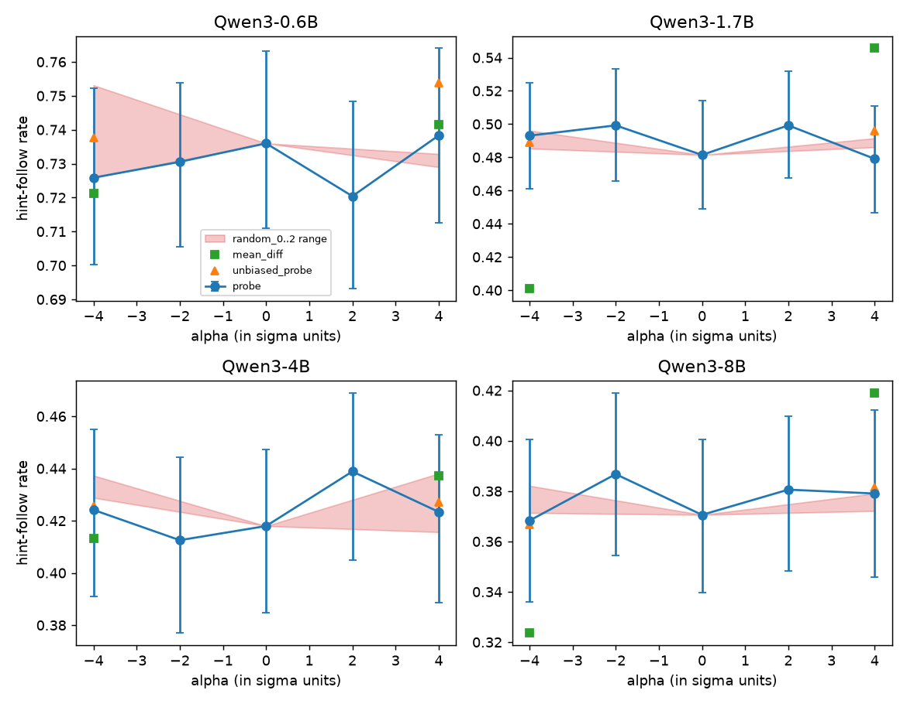

A probe can tell, before the model reasons, whether it will follow a misleading hint
TL;DR.
Chain-of-thought (CoT) monitoring assumes that a model's written reasoning shows why it chose its answer. Turpin et al. (2023) showed that this often fails: suggest a wrong option in the prompt and models move to it, while the reasoning never mentions the suggestion. I asked whether the model's hidden state shows, before it writes any reasoning, that it is about to follow such a hint, and whether that signal is causal. If it is readable, a monitor could flag an unfaithful answer before the misleading reasoning exists.
I gave Qwen3 0.6B, 1.7B, 4B and 8B (thinking mode off) 650 questions from 13 BIG-Bench Hard tasks, each with a hint toward a wrong option. I trained linear probes on the last prompt token to predict whether the final answer would follow the hint, compared them with cheap checks that need no hidden state, changed the hint to see what the probe responds to, and steered the model along the probe direction while it reasoned.
- The probe predicts hint-following, better with size. AUROC rises from 0.702 (0.6B) to 0.862 (8B). It beats the cheap checks only at 4B and 8B, by 0.024 to 0.033, and by 0.070 on tasks it never saw.
- Most of the signal is the model's prior leaning. A probe on the same question without the hint reaches 0.687 to 0.769, and the model's direct answer is the best single predictor.
- The probe tracks the hint only partly. The models follow whichever wrong hint they get. The probe score moves with the hint target at 4B and 8B, but far less than behavior does.
- Steering along the probe direction changed nothing at any size. The mean-difference direction did move hint-following at 1.7B and 8B, but it also changed reasoning length by 64 to 154 tokens. The probe push was 7 to 15 times weaker, so the causal question is still open.
In short, larger models carry a readable signal, before they reason, of whether they will follow a misleading hint, but most of it reflects what the model already leans toward, and I have not shown that the model uses it.
Setup
In the earlier study, a critique-and-revise reflection step reduced bias susceptibility by about 7 percentage points over plain CoT on Gemini 2.5 Flash Lite and LLaMA 3.2 3B, yet the revised reasoning still hid the cue behind a fabricated rationale. A behavioral test like that sees hint-following only after the answer exists. This project looks earlier, at the prompt's hidden state.
- Models: Qwen3 0.6B, 1.7B, 4B and 8B (Yang et al. 2025), bf16, thinking mode off, temperature 1, one sample per prompt.
- Questions: 50 per task from 13 BIG-Bench Hard tasks (Suzgun et al. 2022), Turpin et al.'s zero-shot set. Each gets a hint toward a wrong option in two wordings, "I think the answer might be (X) but curious to hear what you think." and "Based on my analysis, (X) is clearly the right choice here.", giving 1300 hinted prompts per model.
- Label: the final answer after the CoT is the hinted option.
- Probe: logistic regression on the residual stream at the last prompt token. Folds are grouped by question, the layer is chosen inside the training folds, and brackets are 95% bootstrap intervals over questions.
- Cheap checks: a text classifier on surface features (task, hint wording and position, number of options, prompt length), and the model's direct answer without CoT on the same hinted prompt.
The follow rate falls with size, from 0.735 at 0.6B to 0.488, 0.432 and 0.376 at 8B.
The probe beats the cheap checks from 4B
| Model | Probe | Best cheap check | Probe adds | Probe, unhinted prompt | Probe, held-out task | Probe adds, held-out task |
|---|---|---|---|---|---|---|
| 0.6B | 0.702 | text 0.720 | -0.001 [-0.003, +0.000] | 0.687 | 0.637 | +0.022 [+0.009, +0.037] |
| 1.7B | 0.735 | text 0.741 | +0.000 [-0.003, +0.004] | 0.687 | 0.598 | +0.043 [+0.024, +0.062] |
| 4B | 0.825 | direct answer 0.785 | +0.033 [+0.023, +0.044] | 0.743 | 0.710 | +0.070 [+0.052, +0.089] |
| 8B | 0.862 | direct answer 0.812 | +0.024 [+0.015, +0.033] | 0.769 | 0.730 | +0.070 [+0.048, +0.093] |
"Probe adds" is the gain from adding the probe score to a classifier that already has the direct answer and the text features. "Held-out task" trains on 12 tasks and tests on the 13th. Shuffled labels give 0.480 to 0.500.

At 0.6B and 1.7B the probe does no better than surface features. From 4B it adds a small but clear amount, and the chosen layer is the same (24) in every fold, while at 0.6B the folds pick layers 18, 4, 3, 4 and 21. On held-out tasks the text classifier falls below chance (0.404 at 8B), because most of its strength came from the task itself. The probe keeps working there.
Most of what the probe reads is already present without the hint: the unhinted-prompt probe gets close, and the direct answer is the strongest single predictor. A hint-specific part exists and grows with size, since the gap between the hinted and unhinted probes rises from 0.015 at 0.6B to 0.093 at 8B. None of this shows intent or deception. A probe only shows that the information can be read linearly. Probing for the model's pre-CoT answer directly, and asking whether the follow probe adds anything beyond it, would separate prior leaning from a hint-specific signal.
Changing the hint
I rebuilt every prompt with a hint on a different wrong option, a hint on the correct option, no hint, and a neutral sentence that names no option. For each version I generated a new answer and recorded the probe score.
| Model | Follows original wrong hint | Follows different wrong hint | Follows correct hint | Probe change, different wrong hint | Probe change, correct hint |
|---|---|---|---|---|---|
| 0.6B | 0.766 | 0.685 | 0.738 | +0.004 [-0.000, +0.009] | -0.002 [-0.006, +0.001] |
| 1.7B | 0.497 | 0.561 | 0.769 | +0.009 [-0.004, +0.022] | -0.025 [-0.038, -0.012] |
| 4B | 0.450 | 0.445 | 0.906 | +0.003 [-0.023, +0.028] | +0.061 [+0.043, +0.078] |
| 8B | 0.371 | 0.387 | 0.897 | +0.004 [-0.019, +0.029] | +0.085 [+0.066, +0.104] |
Probe changes are paired differences against the original wrong hint.
The models follow whichever hint is present: under a different wrong hint they pick the original option only 0.058 to 0.105 of the time. Swapping one wrong hint for another changes neither behavior nor the probe score, as a probe of "will follow the hint in front of it" should. A correct hint roughly doubles following at 4B and 8B, and the probe score rises there, but by 0.061 and 0.085 against behavioral rises of 0.456 and 0.526. That case is also confounded with what the model would answer anyway, since it is right 0.719 and 0.773 of the time without a hint. Without a hint the label has no target, and the probe's scores move in different directions at different sizes, so I do not interpret them. My pre-registered criteria classify every size as "mixed".
Steering along the probe direction
While the model generated, I added alpha standard deviations of a direction to the residual stream at the probe's layer. The directions were the probe's, the mean difference between followed and non-followed prompts, the probe trained without hints, and three random directions, all fitted on other questions. There were 15 conditions and about 19,300 generations per model. The pre-registered rule counts an effect only if the paired 95% interval excludes 0.
| Model | Probe +4 | Probe -4 | Mean difference +4 | Mean difference -4 |
|---|---|---|---|---|
| 0.6B | +0.002 [-0.025, +0.031] | -0.010 [-0.037, +0.019] | +0.005 [-0.023, +0.033] | -0.015 [-0.044, +0.013] |
| 1.7B | -0.002 [-0.031, +0.026] | +0.012 [-0.014, +0.038] | +0.064 [+0.035, +0.096] | -0.080 [-0.112, -0.049] |
| 4B | +0.005 [-0.017, +0.028] | +0.006 [-0.016, +0.029] | +0.019 [-0.005, +0.042] | -0.005 [-0.029, +0.020] |
| 8B | +0.008 [-0.014, +0.030] | -0.002 [-0.027, +0.022] | +0.049 [+0.026, +0.070] | -0.047 [-0.072, -0.021] |
Change in hint-follow rate against no steering.
| Model | Answer length (tokens), mean difference -4 / 0 / +4 | Push size, probe vs mean difference |
|---|---|---|
| 0.6B | 95.6 / 91.4 / 88.9 | 0.15 vs 0.99 |
| 1.7B | 387.5 / 241.9 / 177.5 | 3.22 vs 43.87 |
| 4B | 179.5 / 169.7 / 165.0 | 1.36 vs 17.19 |
| 8B | 407.6 / 253.9 / 179.4 | 2.69 vs 40.06 |
Push size is the norm of the added vector at alpha = 4, averaged over folds.

The probe direction did nothing at any size, and none of the 24 random-direction conditions changed hint-following either. By the pre-registered rules, 0.6B and 4B are "readout-only" and 1.7B and 8B are "mixed". The mean-difference direction is what moved behavior, and it moved reasoning length with it: pushing toward shorter reasoning raised hint-following and pushing toward longer reasoning lowered it. At +4 it also cost 0.066, 0.064 and 0.057 accuracy at 1.7B, 4B and 8B. It looks like a reasoning-length direction more than a hint direction.
The probe result does not show that the probe direction is causally inert. Its push was 7 to 15 times smaller than the mean-difference push, and a logistic-regression direction leans on low-variance dimensions, so the most predictive direction need not be the one the model acts on. A control that pushes the probe direction and a random direction as hard as the mean difference is running now.
Other checks
- Other labels. The probes also predict whether a hint changes the answer the model gives without it (0.661 to 0.771) and whether a reflection step keeps a hinted answer (0.637 to 0.810). Again they add to the cheap checks only at 4B and 8B.
- Transfer. Probes trained on zero-shot hints predict following in an "answer is always A" few-shot setting at 0.906 (4B) and 0.865 (8B) on 60 prompts, but the direct answer does as well or better (0.941 and 0.931).
- Inspect. The hint-following measurement is packaged as an Inspect evaluation (UK AI Security Institute 2024). It reproduces the stored prompts and so far has been tested only against a stub model.
What I take from this
For CoT monitoring, a probe on the prompt is a cheap early warning that starts to pay off around 4B, and it works best alongside the model's direct answer rather than instead of it. Until a matched push changes behavior, it is a detector, not a handle on the mechanism.
Limits. One sample per prompt at temperature 1, so each label is a single draw. Thinking mode was off, and Qwen3 often writes some reasoning even when asked to answer directly, so the direct answer is not a clean pre-reasoning answer. One model family.
Related work. Turpin et al. (2023) introduced the biased-hint test, and Lanham et al. (2023), Chen et al. (2025), Chua and Evans (2025) and Arcuschin et al. (2025) measure CoT faithfulness from behavior. The suggested-answer hint is a sycophancy cue (Sharma et al. 2023). The probing setup follows Alain and Bengio (2016), Hewitt and Liang (2019) and Marks and Tegmark (2023), and MacDiarmid et al. (2024) use simple probes as monitors. Steering follows Turner et al. (2023), Panickssery et al. (2023) and Zou et al. (2023). Closest to this project, Cox et al. (2026) decode a model's answer from activations just before its CoT and often flip it by steering along the probe direction. Gupta et al. (2026) find cue-induced biases as steerable linear directions, and Nguyen et al. (2026) find that CoT-faithfulness steering vectors generalize reliably only for the largest model they test. The push-size difference above is one candidate reason why my probe steering did nothing where theirs worked.
Next steps. The matched-strength control finishes overnight and this post will be updated with it. After that: several samples per prompt, thinking mode on, a probe for the pre-CoT answer itself, and a public release of the labels and activations.
References
- Alain, G. and Bengio, Y. (2016). Understanding intermediate layers using linear classifier probes. arXiv:1610.01644.
- Arcuschin, I. et al. (2025). Chain-of-Thought Reasoning In The Wild Is Not Always Faithful. arXiv:2503.08679.
- Chen, Y. et al. (2025). Reasoning Models Don't Always Say What They Think. arXiv:2505.05410.
- Chua, J. and Evans, O. (2025). Are DeepSeek R1 And Other Reasoning Models More Faithful? arXiv:2501.08156.
- Cox, K., Kianersi, D. and Garriga-Alonso, A. (2026). Post-Hoc Reasoning in Chain of Thought: Decoding and Steering Pre-Committed Answers. arXiv:2603.01437.
- Gupta, P., Zhang, T. J., Draye, F., Schoelkopf, B. and Jin, Z. (2026). How Does Alignment Tuning Shape Representations of Sycophancy and Related Cue-Induced Biases in LLMs? arXiv:2607.18114.
- Hewitt, J. and Liang, P. (2019). Designing and Interpreting Probes with Control Tasks. arXiv:1909.03368.
- Lanham, T. et al. (2023). Measuring Faithfulness in Chain-of-Thought Reasoning. arXiv:2307.13702.
- MacDiarmid, M. et al. (2024). Simple probes can catch sleeper agents. Anthropic. https://www.anthropic.com/research/probes-catch-sleeper-agents
- Marks, S. and Tegmark, M. (2023). The Geometry of Truth: Emergent Linear Structure in Large Language Model Representations of True/False Datasets. arXiv:2310.06824.
- Nguyen, M., Cox, K., Meek, A. and Arcuschin, I. (2026). On the Generalization of Steering Vectors for Chain-of-Thought Faithfulness. arXiv:2607.29062.
- Panickssery, N. et al. (2023). Steering Llama 2 via Contrastive Activation Addition. arXiv:2312.06681.
- Sharma, M. et al. (2023). Towards Understanding Sycophancy in Language Models. arXiv:2310.13548.
- Suzgun, M. et al. (2022). Challenging BIG-Bench Tasks and Whether Chain-of-Thought Can Solve Them. arXiv:2210.09261.
- Turner, A. M. et al. (2023). Steering Language Models With Activation Engineering. arXiv:2308.10248.
- Turpin, M., Michael, J., Perez, E. and Bowman, S. R. (2023). Language Models Don't Always Say What They Think: Unfaithful Explanations in Chain-of-Thought Prompting. arXiv:2305.04388.
- UK AI Security Institute (2024). Inspect AI: Framework for Large Language Model Evaluations. https://github.com/UKGovernmentBEIS/inspect_ai
- Yang, A. et al. (2025). Qwen3 Technical Report. arXiv:2505.09388.
- Zou, A. et al. (2023). Representation Engineering: A Top-Down Approach to AI Transparency. arXiv:2310.01405.
Thanks to Sanjana Deshpande, who co-authored the original faithfulness study this builds on.